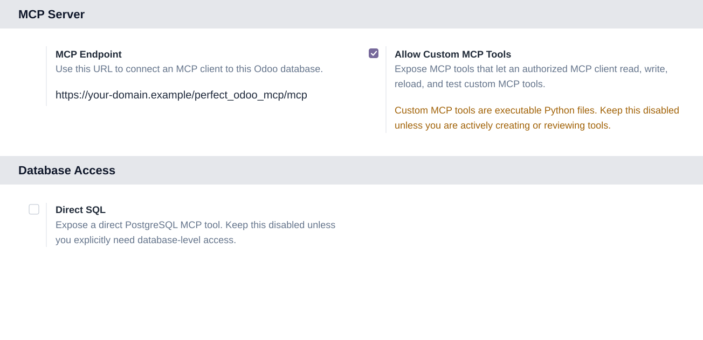

Perfect Odoo MCP is not compatible with Odoo's Apps > Import Module upload flow. It defines Python controllers, models, OAuth routes, and MCP endpoints, so it must be installed as a normal local addon from an Odoo addons path and loaded by the Odoo server. This follows Odoo's security architecture for server-side Python code.
curl -fsSL https://raw.githubusercontent.com/hidekiyamamoto/odoo-mcp/main/install-perfect-odoo-mcp.sh | bash -s -- --database YOUR_DATABASE
Perfect Odoo MCP is an Odoo app, not an external adapter. MCP calls enter Odoo, authenticate through Odoo, and execute with the authorized user's environment.
Odoo login and ACLsUsers authorize through Odoo OAuth. Record access follows Odoo security rules instead of a shared integration user. |
Operational discoveryInventory installed modules, inspect Python addon code, and store instance-specific AI context for future sessions. |
Automatic context bootstrapWhen context is empty, the server gives the AI a startup protocol for inspecting the database and saving durable guidance. |
Optional SQLExpose direct PostgreSQL access only when enabled, with readonly mode and statement guards for safer diagnostics. |
The first context request is not a blank answer. If no durable context exists yet, Perfect Odoo MCP tells the consuming AI exactly how to bootstrap itself for this database before doing real work.
Read
Call get-ai-context and receive the bootstrap protocol.
|
Inspect
Run install_info and identify custom or unusual modules.
|
Verify
Use odoo_python_lookup to inspect relevant addon code.
|
Persist
Write the final operating context with set-ai-context.
|
Draft tools are normal Python files, tested before exposure, reviewed before publishing, and loaded by the MCP server without changing the core module.
| InspectUse install info and Python lookup to understand models, fields, and business logic. | DraftWrite a custom tool file with EXPOSED = False. |
TestCall it through call-custom until behavior is correct. |
PublishSet EXPOSED = True, reload tools, and refresh actions. |
After installation, copy the HTTPS endpoint from Settings and connect it from an MCP-capable client.

ChatGPTCreate a custom MCP connector in Developer Mode, use the Perfect Odoo MCP endpoint, choose OAuth discovery, authorize in Odoo, then refresh actions when tools change. |
Gemini CLIAdd the remote HTTP MCP server with |
First runAsk the client to call |
|
|
|
Perfect Odoo MCP is designed as a foundation. More Odoo-native MCP capabilities are coming next.